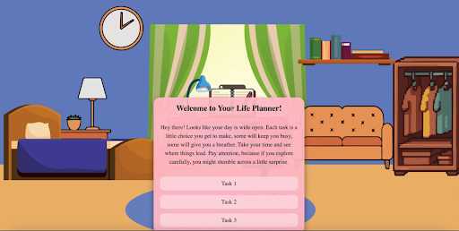
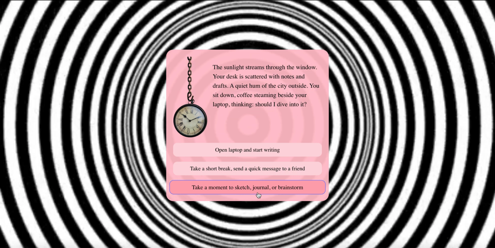
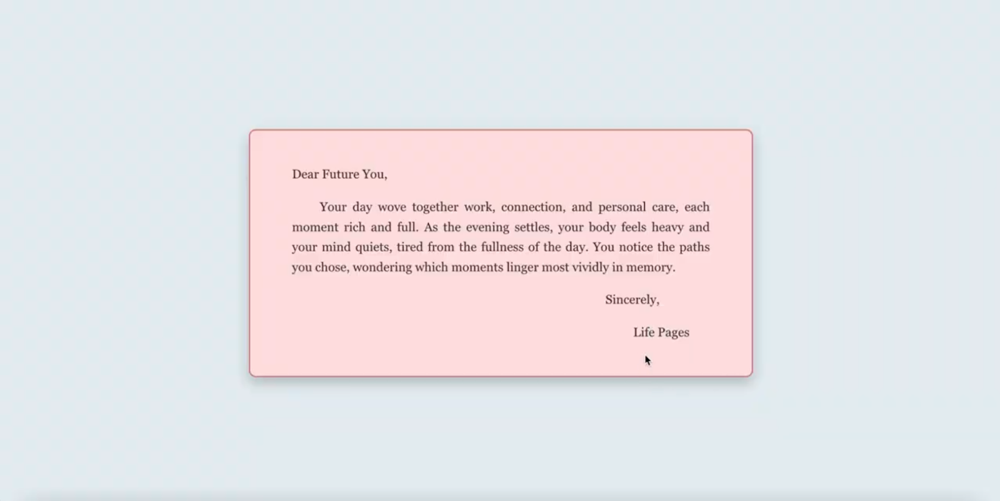

Your Life Pages
Your Life Pages lets users take control of their accelerated time by making choices across work, social, and personal tasks, ultimately revealing how their habits shape the course of their life.
Interactive Experience / Creative Coding

Overview
Your Life Pages lets users take control of their accelerated time by making choices across work, social, and personal tasks, ultimately revealing how their habits shape the course of their life.
Concept
In the world of Your Life Pages, people have a little more control over their time, but every choice comes with trade-offs. This interactive world explores how everyday decisions quietly shape the life we end up living, even though time is always finite.

How it works
Users receive a simple life planner with three tasks: work, social connections, and personal joy, and make choices that feel natural to their habits. Spending more time on one task brings greater reward in that area but leaves less time for the others.
Once a task is completed, it is locked, reflecting the irreversibility of time. At the end, users receive a letter showing the life they have created, encouraging reflection rather than judging their decisions.


Development
I built Your Life Pages using React.js, with state variables tracking user choices and controlling page transitions, background updates, and endings. CSS Grid made objects in the background clickable, revealing subtle reflections, while Adobe Illustrator provided the custom visual environments.
The interactive experience responds dynamically to user decisions, including task completion and time extensions, and integrates adaptive audio to reinforce the passage of time.